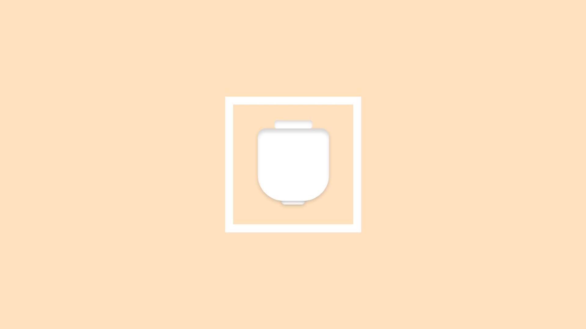

Grundlæggende Web
Minimal Keramik
I den første opgave udarbejdede jeg en hjemmeside omhandlende keramik. Min gruppe havde fået tildelt stilen "minimalisme". Jeg inkorporerede stilen ved at vælge billeder der indeholder negative space, hvilket er meget typisk for den minimalistiske stil. Derudover har jeg også arbejdet med at holde en simpel stil i forhold til fonte, da det også er kendetegnende for minimalisme. Hvad lærte jeg? Løsning? Process?
